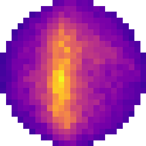

Scene
Array, sky sphere and calibrators in fringe's local frame (z = zenith)

fringe simulation environmentArray, sky sphere and calibrators in fringe's local frame (z = zenith)
Zenith-steered power pattern
Expected per-bin power (received flux density, Jy) by component, as fringe synthesises it
Configure the environment and press Run simulation. Time-domain antenna samples, spectra and waterfalls appear here.
Click an antenna to inspect it
Last simulated window · drag to zoom, double-click to reset
Mean over integrations vs analytic model
Last window vs Gaussian of equal variance
Array-averaged power per integration window (bandpass)
After a run, the server beamforms the simulated antenna E-fields into dirty sky images at each imaging channel.
Beamformed from simulated E-fields, averaged over integrations
Sky model ⊛ array pattern + noise floor (calibrators as far-field points)
Array pattern at the channel frequency
Select data products under Analysis & output and run. Raw samples, calibrator TDOAs and per-integration images are written to an HDF5 file you can download here.